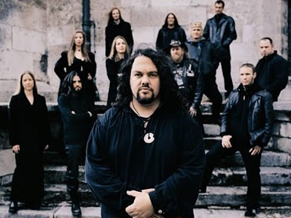

Formada no final dos anos 80 e início
dos anos 90, em Munique, Alemanha, a banda Haggard traz
uma carreira sólida e muito bem conceituada na cena
do metal europeu. Porém, desde seus primeiros anos,
quando seu trabalho ainda era pouco conhecido, até
alcançar os álbuns mais bem sucedidos e conquistar
notoriedade entre a crítica e o público, a
banda atravessou um longo período de mudanças
em sua formação, sonoridade e temas abordados.
As primeiras demos surgiram nestes momentos
iniciais: Introduction (1992) e Progressive
(1993). Uma musicalidade agressiva e muito próxima
do Death Metal com alguns momentos lembrando o Doom Metal
eram a tônica destes trabalhos que não obtiveram
uma grande repercussão.
Já em 1995 a banda apresenta a demo
Once... Upon a December’s Dawn. Aqui já
se nota uma instrumentação clássica
combinada com os elementos característicos do Metal,
influências Folk e referências da musica medieval.
A esta altura, já trazia em sua formação
oficial músicos eruditos com cordas, piano e sopranos.
Foi através deste disco que o Haggard assumiu uma
nova postura musical que não seria abandonada e se
tornaria a guia para toda a continuidade de sua carreira.
Este disco também rendeu a primeira turnê e
a oportunidade de expor seu trabalho ao grande público.
O
primeiro álbum de estúdio foi lançado
apenas em dezembro de 1997 pela "Serenade Records".
Liderado pelo vocalista, compositor e instrumentista iraniano
Asis Nasseri, And thou shalt trust... the seer
registra definitivamente os novos rumos sinfônicos
que a banda adotou. Conceitual, com faixas divididas como
"capítulos" e uma sonoridade medieval-renascentista,
And thou shalt trust... the seer foi a chave do Haggard
para conquistar a crítica musical e surgir para o
grande público, com mais de onze mil cópias
vendidas. Um dos destaques é a faixa Chapter
5: Lost (Robin's Song). No mesmo momento, o website
da banda é publicado.
Em 1998, a banda segue em turnê com
o Atrocity e Tristania
pela Áustria, Suíça e Alemanha. Ainda,
é lançado o VHS In A Pale Moon's Shadow
com trechos de apresentações ao vivo. Em fevereiro
de 2000 é lançado o segundo disco oficial:
Awaking The Centuries.
Na mesma linha musical de And thou shalt
trust... the seer, Awaking The Centuries aborda as profecias
de Nostradamus em suas composições e letras
em latim, inglês e alemão. As locuções
das faixas Pestilência e Statement Zur
Lage Der Musica ajudam a entrelaçar a proposta
temática. Enquanto faixas como Chapter II: The
Final Victory, Chapter IV: In A Fullmoon Procession
e a faixa que dá nome ao álbum (Chapter
III: Awaking The Centuries, que traz uma rica instrumentação
e um arranjo sofisticado ao longo de mais de nove minutos)
são os destaques deste trabalho.
No ano seguinte, ainda embalada pela ótima
recepção do disco anterior, a banda vai ao
México e grava ao vivo o álbum Awaking
the Gods, que é praticamente uma versão
live de Awaking The Centuries. Esta apresentação
também é lançada em VHS e DVD e ajuda
a popularizar a banda além do cenário europeu.
O ano de 2004 marcou o lançamento
do terceiro álbum oficial. Eppur si Muove
(Ainda se Move) dá continuidade ao padrão
conceitual e sinfônico dos trabalhos anteriores. Contando,
a esta altura, com dezesseis músicos na formação
oficial e dez convidados, as dez faixas e citações
em inglês, alemão, latim e italiano, abordam
a perspectiva científica de Galileu Galilei e a oposição
clerical as suas idéias, em meio aos arranjos densos
de cordas, corais e guitarras. Trechos das apresentações
ao vivo da banda foram reunidos e lançados em um
DVD.
A esta altura, Eppur si Muove já
havia solidificado o Haggard entre o público e a
crítica européia. As turnês se proliferavam
à mesma proporção que a popularidade
crescia. Neste momento, já se iniciam rumores e expectativas
sobre um novo álbum.
 Tales
of Ithiria é o disco mais recente da banda.
Gravado por vinte músicos da formação
atual e mais nove instrumentistas convidados, lançado
em fevereiro de 2009, o álbum traz onze músicas
que, como de costume, abordam um tema específico.
Porém, desta vez, o tema é uma fantasia criada
pelo próprio compositor Asis Nasseri. Ithiria é
o nome do mundo imaginário que serve como pano de
fundo para as lembranças de batalha do personagem
principal.
Tales
of Ithiria é o disco mais recente da banda.
Gravado por vinte músicos da formação
atual e mais nove instrumentistas convidados, lançado
em fevereiro de 2009, o álbum traz onze músicas
que, como de costume, abordam um tema específico.
Porém, desta vez, o tema é uma fantasia criada
pelo próprio compositor Asis Nasseri. Ithiria é
o nome do mundo imaginário que serve como pano de
fundo para as lembranças de batalha do personagem
principal.
Asis Nasseri, comentando a temática
de Tales of Ithiria, declarou "tenho que admitir
que deixei a história com um peso no coração";
e ainda "eu me interesso muito por história
e há uma variedade de temas que gostaria de ter abordado,
mas as histórias tornaram-se um tema comum ao Haggard";
justificando a opção de um tema fictício
como tônica do álbum.
Além dos álbuns que registram
a ascensão e consolidam o Haggard no cenário
metal, diversas participações em festivais
e turnês pela América Latina e Europa elevaram
o nome da banda ao longo de quase duas décadas de
trajetória.
Apesar de apostar na fórmula consagrada
do metal combinado com referências clássicas
e folk, além dos tradicionais álbuns conceituais,
o Haggard conquistou espaço com uma musicalidade
autêntica e sofisticada, utilizando instrumentos clássicos
executados por músicos eruditos; ou seja, sem fazer
uso de sintetizadores e recursos de estúdio; obtendo
assim um resultado mais fiel à proposta e merecedor
do reconhecimento que tem.
Por
Spectrum
Downloads
Disponíveis: